If you see any issues, please do make us aware via our Contact Form.
Thank you for browsing FNaFLore.com, we hope you enjoy the improvements that are coming to the site!
by Chica's hips!

What is in the FNaF 4 BOX?
Author Links
What is in the FNaF 4 box at the end of Night 7? This question has been plaguing FNaF theorists and I believe the key to understanding the lore of FNaF. Since Scott will likely never open the box, I have decided that I will look at the clues given to us, and put the pieces together, figuring out what everyone missed with FNaF 4.
What we got right
Scott has said that the fanbase has got everything right with FNaF 1-3. So I will use the information from the games as fact and will base my investigation off of that.
FNaF 1: There was an incident where a killer lured 2 children and 3 others disappeared at the same time. These five children went on to possess the five animatronics present in the game (Freddy, Bonnie, Chica, Foxy and Golden Freddy). The killer was charged, even though the bodies were never found. After the MCI, the animatronics began oozing blood and mucus. They also had a “foul odor”. Phone Guy gets killed on the fourth night and Mike Schmidt is fired after having an “odor”, for tampering with the animatronics and for being unprofessional.
FNaF 2: Before the MCI, the killer (referred to now as the Purple Guy) murdered a child outside of the diner and that child became the Puppet. After the MCI happened, the Puppet gave the children life in the animatronics apart from one, Golden Freddy. Then there was another round of killing, with the souls possessing the Toy animatronics. This brings us to the events of the game in 1987. In the game, there is going to be a party which is presumably when the Bite of 87 happens because shortly after the party, the restaurant gets closed down and the Toy’s are scrapped. Jeremy is then moved to the day shift with Fritz Smith moving in and gets fired on the first day for tampering with animatronics and “odor”.
FNaF 3: 30 years prior to the events of FNaF 3, the Purple Guy killer came back to destroy the animatronics one by one, but the spirit of Golden Freddy scared him into a springlock suit. The moisture in the room caused the springlocks to snap onto him, killing him and making him possess the suit. From then on, he became known as Springtrap. Then in FNaF 3, a fire breaks out and Springtrap survives. Golden Freddy also missed out on their Happiest Day, which was their birthday.
Now you know the basics of FNaF, time to flip everything you thought you knew upside down.
FNaF 4: The Final Chapter
This game introduced us to two brothers, the Bite Victim of 83 and his older brother. The Bite Victim had a severe fear of the animatronics and his brother bullied for his phobia. One fateful day which happened to be his birthday party, his brother accidentally killed him with the Fredbear animatronic. Then right at the end, a mysterious box is shown on Night 7.
Unlike the other games which the fanbase got completely right, no one was able to solve FNaF 4. For this reason, the box has never been opened to this day. The contents have changed over time but that is because FNaF 4 was a very personal, narrative based story about two brothers, not an entire franchise of animatronics. The box was about FNaF 4 but Scott decided to tie up loose ends with Fazbear Entertainment and the MCI, changing the contents of the box.
Scott has said that there are no random easter eggs in FNaF 4. Having said that, there are 3 things I see that begin to change the way I see FNaF 4.
Toy Chica missing a beak
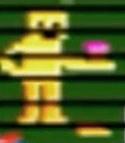
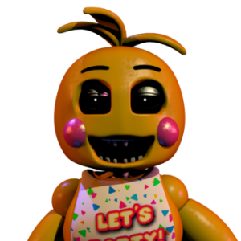
Scott even addressed this in the GTLive stream “Why is Toy Chica’s beak missing?’. Some people think that it’s to show that the Toy animatronics were based off of the toys, however, I don’t think that’s the case. When Scott asked why Toy Chica’s beak fell off, he said he designed to make her feel like a “monster”.
IRL Balloon Boy
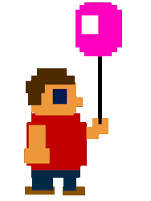
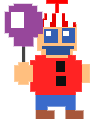
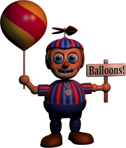
FNaF 4 child FNaF 3 minigame FNaF 2 Balloon Boy
Again, there are no random easter eggs, so I find it very disturbing and interesting that there is a child who seems to have inspired the design of Balloon Boy or looks nearly identical to Balloon Boy.
Mangle
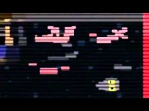
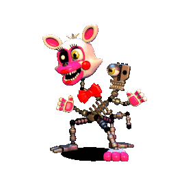
This easter egg is probably the most compelling evidence that there is more than meets the eye to FNaF. Not only is it a Mangle toy, but is broken in a very similar way to the FNaF 2 Mangle.
The point is, these easter eggs are too similar to be ignored as coincidences. Not only that, they were put there for a reason and FNaF is not a dream. So what is going on?
The Mind of a Child
The thing is, MatPat was looking in the right places but he made a mistake that is becoming more apparent with his later videos, his popular headcanon of it all being a dream. He has made the same mistake with BATIM and most recently DeltaRune. The Dream theory was just the start of a trend, but anyway, he was on the right track. The Bite Victim is the main character of what was 4 games that has now branched out into 6 games (I am keeping UCN separate as it does not fit with the current timeline).
However, there are another animatronics such as the lone FNaF 2 endoskeleton and the Shadow animatronics. These animatronics can be fully explained with BV being the player.
The FNaF 2 endoskeleton is memories of BV being locked in the room with the endoskeletons. Endo 2 does not attack or jumpscare you because it is a hallucination.
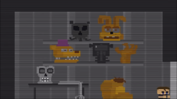
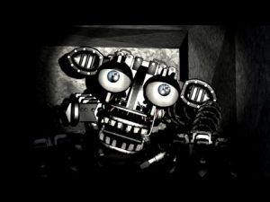
The Shadow are both people that BV feared and what he saw the springlock animatronics as.
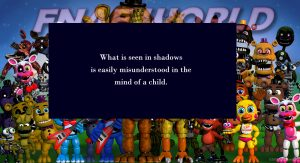
Shadow Freddy is a representation of his father, the Purple Guy aka William Afton. This is because he lurks around the back room and he leads the classic animatronics to their destruction, which is supported by Henry’s speech in the Insanity Ending. This representation manifests into Nightmare, as in the game files, Night 7 (the night that Nightmare becomes active) is called “Shadow Freddy”.
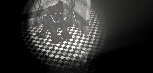
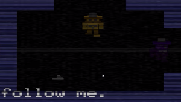
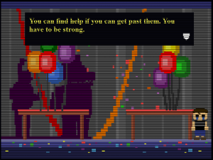
Shadow Bonnie is a representation of his brother, the Foxy Mask Brother. Like Shadow Freddy, he crashes the game if your stare at him for too long. I think Shadow Bonnie is Foxy Bro because of the Happiest Day minigame. Shadow Bonnie is showing remorse for killing his brother so helps a lost soul, the soul of Cassidy.
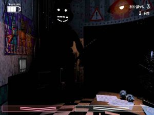
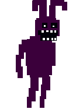
The truth of FNaF 4
After we did not solve the story of FNaF 4, Scott began seeding hints to what we missed in SL and FFPS. The most obvious being the breaker room map.
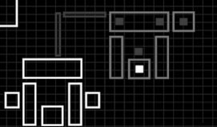
With the white dot being the player and the grey dots being the animatronics, this is recognisable as the FNaF 4 gameplay house. This, I believe, is evidence that FNaF 4 was actually an experiment and the Nightmares do exist, to some extent.
When you flash Nightmare Foxy enough times, he is replaced with a plush toy that wasn’t in the closet previously. this plush toy is in the same spot as the grey dot indicated by the Breaker Room map. But, I find one big problem with the plush doll.
In Ultimate Custom Night, Nightmare Freddy says this line;
“We know who our friends are, and you are not one of them”.
This confirms that the Nightmare animatronics are meant to be BV’s friends. This is reinforced by FredPlush saying in the Night 6 minigame/cutscene, “We are still your friends,” not “I am still your friend”. Remember, it was only Fredbear that hurt BV. The other animatronics did nothing. You could make the claim that it was the bullies who wore the masks of the classic animatronics however, FredPlush does say that specifically Foxy Bro hates BV while BV still refers to FoxyPlush as his friend. So why does the Nightmare Foxy Plush have a head?
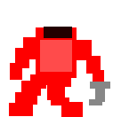
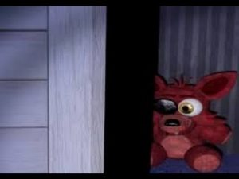
If the plushies are truly the ones causing this, why does this particular plush have a head when it shouldn’t? This is where we have been seeing the timeline completely wrong. The FNaF 4 gameplay takes place BEFORE the minigames, not after. And this is what I believe Scott could have been trying to get at. The Bite Victim can’t have dreamt it up when he was lying in hospital, however, he did dream/experience it before the bite, explaining his fear of them.
Another thing that backs up is a rebuttal to a piece of evidence many people claim. The flowers and IV bag are at an angle on the bed that only someone visiting would see the flowers at the angle. While that is true, I doubt that Scott could make the player being on the bed for the correct angle of how the child should perceive the flowers as he would need to be on the bed however that is where the Freddles emerge from so the actual angle could not be achieved.
Yet again, what the Nightmare animatronics do to you is more evidence that BV is the player in FNaF 4. All of them, apart from possibly Nightmare Chica lift the protagonist up towards their mouth. If you think that the angle of the flowers is proof of Foxy Bro being the FNaF 4 player, then what about the angle of the player nearly getting his head bitten off?
Also, the height of the child, which the cameras in the SL secret room indicate took place in 1983, is consistent with the given height of BV opposed to Foxy Bro.
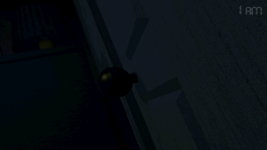

The Nightmare Animatronics
Now, the big question is, what are the Nightmares? Well, the novels provide an answer with the Twisted animatronics.
The Twisted animatronics have an illusion disc that makes them look like a doll. When the disc is turned off, they revert to their original, twisted form. This illusion disc is found in Sister Location, being called a power module.
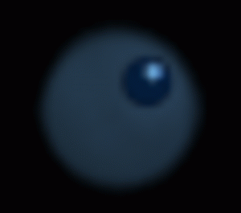
“But we never see the Funtimes change?” is what you will be probably asking.
Well, remember that the Funtimes are designed to lure children, just like the Twisted animatronics were. The Nightmares have the nightmarish appearance of the Twisted while the Funtime animatronics have the functionality. Also, they may not be designed to project the main animatronics, but rather project the Bidybabs and Minireenas.
In the night 4 springlock game, the Minireenas climb around the suit and even into the suit but it seems to do nothing. I believe that the Minireenas are not real and are disc-created illusions. This is also supported by there being no blueprints for the Minireenas. There is also no blueprints for the Bidybabs. Now, before you say, “The Bidybabs attack you in Night 2 and pull on the cubbyhole door”, need I remind you that Baby has been lying to us from the beginning. It was all an elaborate plan so their plan would work, so Baby projected the Bidybabs to make it look like Michael was in danger and gain his trust.
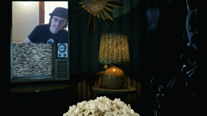
Another piece of evidence is the Minireena in the popcorn easter egg. I don’t think that a Minireena would be hiding in a popcorn kernel bag waiting for the popcorn to popped so why does it appear in the popcorn? Because it’s a projection. It’s not real. On an additional note, there is two blue-ish light sources on the body of the lamp. I think they come from Michael’s eyes. Notice how Ennard stilll has his eyes. This means Mike’s glowing robotic eyes are his own, which is further proof for MikeBot.
Later on in the novel series, The Fourth Closet gave more evidence that was more on the nose. Jessica sees a dancing Springtrap who is moving about and then was revealed to be an illusion, projected by a doll. This explains why the Nightmares move about.
I have previously tried to explain this in the discord but the main complaint is that we are never specified what size the doll is and the illusion discs have only been used as a skin or a suit, not to make the robot look bigger than what is. Well, there is a reasonable answer to this, the illusion does not seem to contained. The dancing Springtrap moved about while the doll stood exactly where is was. This means there was no field limit holding it back from moving around the place. By using that same idea, the doll could make itself look bigger as there is no field stopping it back in theory.
Another complaint is about the Nightmares picking the player up. If they are just an illusion, they should not be able to pick you up. Well, remember, this is a dream based on an event. The animatronics picking you up is just part of the dream and an exaggeration of what actually happened.
Now, a lot of you will say “The novels aren’t canon.” That is true, however Scott has said that they share familar elements. I am not saying because the illusion discs exist in the novels, they must exist in the games. I am saying the illusion discs exist in the novels, and can be found in the games.
The Real Identity of the Bite Victim
For the next part of the theory, we need to understand who the Bite Victim is. Firstly, I want to address the Puppet gender retcon in a new light.
The minigame that was from FNaF 2 had text that said “SAVEHIM”. Back in FNaF 2, the Puppet was the child of a boy. This was until FNaF 6 when the Puppet was revealed to be a girl, specifically Charlie, Henry’s daughter.
This previously known fact had a similar shift in the novels. Sammy was said to have been kidnapped by William Afton, however, it was revealed that Charlie was the one to be kidnapped.
I believe that the retcon was not of the Puppet originally being a boy then becoming a girl. That does not add anything to the story. The real retcon is that Sammy was the soul possessing the Puppet but Scott decided that Charlie should be the soul possessing the Puppet.
And I think I found Sammy’s true purpose…
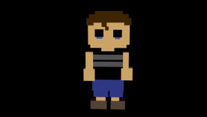
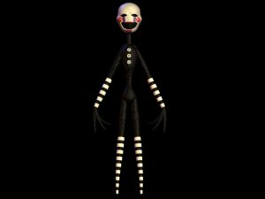
He is the Bite Victim. This explains why Foxy Bro hates him. He isn’t his brother. This is backed up by The Immortal and the Restless.
Vlad keeps on saying the child is not his because it is not. “It’s not my baby!”. BV is not William’s child. He is Henry’s. In the novels, Henry’s wife presumably left him taking Sammy with her. In the games, the same happened but she hooked up with William and tried to pass Sammy off as his child. Henry, whose wife left him after he became a broken man in the novels, said in the Insanity Ending that after Charlie got killed, he “let it bleed out, to cause all of this.” Henry became a broken man in the games as well, so his wife could have left with Sammy as well.
This is supported by Midnight Motorist. The Green Guy is mostly likely Henry as green was the colour specific to Charlie and Henry was known for in the novels for wearing a green flannel. In the minigame, he pushes away Orange Guy, saying he can’t be here. This could be because of Charlie’s death or because William hooked up with his wife or both. However, the evidence starts when Orange Guy knocks on the door of BV.
William says, “This is my house! He can’t ignore me like that.” Not only does William not love BV, he doesn’t call him son or anything. Nothing like, “I’m your father! Open this door!”. When BV does not open the door, William goes outside and says he “Ran off to that place again. He’ll be sorry when he gets back.” Where did BV run off to? Jr’s. To where his real dad is. That’s why William isn’t running after him. He knows where BV is but can’t get to him because Henry won’t let him.
This raises the question of why didn’t Henry try to fight to have Sammy living with him. Well, I don’t think neglecting a daughter to have her be killed is a good track record for child services so he probably wouldn’t be able to raise Sammy even though he was the biological father.
Now, the question on everyone’s mind: If Michael is BV, how did he survive the Bite?
Michael’s Resurrection
He became a robot.
“But Jurg, William doesn’t have the skill or knowledge to make a human-like robot such as Charlie in the novels”. Well, I don’t think that William made him. I think Henry, his real father, did.
I think Henry after losing Charlie was afraid to lose his son again. “SAVE HIM” still has relevance as it is no longer about the Puppet, but about BV. Henry is losing his final child and he is as powerless as he was when Charlie died. So, he does the only thing he can. “Put him back together”. And I also think he is the voice of FredPlush. Or at least at that point.
In the logbook, the faded text asks Michael, “DOES HE STILL TALK TO YOU (FredPlush)?”. This raises the question of how does this person know who FredPlush is, and how they know he talked to BV if he was just an imaginary friend. Unless FredPlush was actually talking to BV. But for what purpose? To intentionally scare him away from his father, Henry.
FredPlush seems to be encouraging the fear of the animatronics and telling BV to run away, rather than face them. This works, as BV seems to be afraid of all animatronics. From Midnight Motorist, there seems to be a Fazbear location while Fredbears is running. I believe from this, that William was the owner of Fredbear’s Family Diner while Henry was the owner of Freddy Fazbear’s Pizzeria. The Bite of 83 could be the motive for the MCI.
But back to BV. Before the Bite of 83, we are introduced to Nightmare Fredbear as BV was locked in the saferoom the day before the party. Then after the Bite of 83, Nightmare appears. This is because William is the true villain, not the animatronics. Nightmare in UCN says “I am your wickedness, made of flesh.” But of course, remember, this is a dream.
So, how did BV survive? Extended life support.
Because BV survived for about a day before suffering a cardiac arrest, he would be put on life support as the impact alone did not kill him. Just before he suffers the cardiac arrest, that is when Henry, his real father, comes in. “Your broken. We are still your friends. Do you still believe that? I’m still here. I will put you back together.”
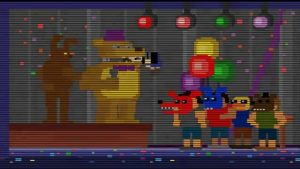
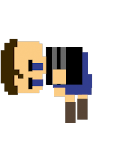
I believe that from where BV was bitten and how the sprite is, this was not a chomp to the head. This was a bite to the neck, causing BV to be paralyzed explaining why his body is just hanging there and why BV survived for as long as he did.
He’s broken, both physically (that Henry can see as he is paralyzed), and coincidentally figuratively. They are still his friends as I think Henry gave BV the classic plushies as a gift, sort of like giving him a teddy so he won’t be alone. However, William tried to turn BV against the plushies by using them as the Nightmare’s source. Just like how he found out the true purpose of the Funtimes, he learned what William had done to the plushies. “Do you still believe that?” is Henry trying to see if William has turned him against the animatronics. Henry then says he is still here and will put BV back together.
So, if BV was put on life support, Henry could have made him to be a cyborg that continues the life support. We also know that the Funtimes were created after 1983 so William could have offered a trade. Henry can make BV a robot if Henry makes some robots for him. But enough speculation and assumptions, where is the evidence?
Both Fritz Smith and Mike Schmidt were fired partially for having a bad odour. This parallels the animatronics of the MCI as they were said to have mucus and an odour. Not only that, but their firing reasons are practically the same, only with Fritz Smith being fired on the first day, even he didn’t listen to any of the training tapes and survived at peak animatronic time. The illusions discs that also exist in Sister Location emit nausea so the odour could be attributed to that.
This also brings me to Jeremy Fitzgerald. Recently, it was revealed that the names of the MCI victims were Gabriel, Susie, Fritz and Jeremy with Cassidy being discovered in the logbook. Fritz and Jeremy being MCI victims made me suspicious of if the night guards real names were Fritz and Jeremy, then the logbook gave a clue. It’s in the form of a sentence starter for a story with Jeremy narrating. He talks about how he will be getting moved to the dayshift soon but feels that something is following him home. In the FNaF 4 trailer, one of the sentences that appears is “WHAT HAVE YOU BROUGHT HOME?”. I think that Jeremy is also Michael Afton.
This brings me to how did Michael survive the scooping? Well, firstly, I need to establish when SL takes place, 2023.
In the Custom Night ending cutscene, it sounds like Michael had just been revived and the background images of a burnt down Fazbear Frights suggests this is in 2023, after FNaF 3. Well, rotting or the breakdown of organic material can take up to a month before the body turns to liquid. So, a month before FNaF 3 which I think is safe to assume that SL takes place in 2023. More evidence is the length of time for the SL custom night cutscenes. We see the process of Michael rotting and if each cutscene is set one day apart, then Michael’s rotting is consistent.
So, if Michael is in SL during FNaF 3, who is the FNaF 3 player? His brother.
Remember how I said Shadow Bonnie was Foxy Bro, well, that’s because he saves the MCI 40 years after he hurt BV. The timeline of FNaF 3 itself plays out fairly simple with Foxy Bro fending off William but he dies in the fire of Fazbear’s Fright. This is when the Bad ending takes place. After that, Foxy Bro goes to FNaF World. In the Clock ending and the only canon part of FNaF World, Foxy Bro leaves breadcrumbs for a mysterious “him” to find his way in the form of the FNaF 3 Happiest Day minigames. This leads to the Good ending where the MCI kids are finally freed and Golden Freddy gets her Happiest Day. However, that is not all that happens. FredPlush says to BV that the pieces are in place for him, and he has to do is find them. BV is the person who had the breadcrumbs left for him.
What exactly to BV in FNaF World was revealed in the English translations of the Japanese-dubbed Anime cutscenes in UCN. With the English subtitles, it is made clear that BV is Freddy while Foxy Bro is Foxy. However, in the end, Foxy leaves instead of Freddy. This is Foxy Bro going to FNaF World. The Japanese translations then tell the story of BV/Freddy.
Freddy’s story starts with him sitting at home, reminiscing about a time similar to when he hurt his mouth eating corn flakes (yep, that’s the actual translation). He was meditating when an annoying bird bothered him. He did something bad to the bird but he can’t remember what he did. This is because Michael was zapping the SL animatronics, making them hate him. Then something happened to Freddy. Some troublesome kids decided to drown him. This is Michael being scooped. Freddy says they tried to both kill and help him because that is what Baby had been doing. She was trying to kill him from the beginning but she helped save him from the Bidybabs and she told him how to survive in the springlock suit. She was both trying to kill him and make him survive. After he dies, Freddy says he meets his ancestors. The ancestors say their generation was better off and how kids these days have no respect and play video games all day (I believe this is for comical effect). When Freddy then asks to take his leave, he wakes up and comes to the waters surface. He swims home but says he has a mouth on his shoulder and last night, he dreamt of floating in space before falling asleep. This is a reference to Mangle (head on shoulder) and FNaF 57 which both occur in FNaF World. He then wakes up and see’s the place his ancestors was talking about, but the people around him said ‘No.” They said he was holding onto the juice of too many dojo’s, then he falls into an alpaca drinking trough. “It smelt terrible”.
This is the cutscene of the Clock Ending.
“We are still your friends. Do you believe that? The pieces are in place for you. All you have to do is find them. Rest.”
This is the MCI giving life to BV, their friend. He is holding onto the juice of too many dojo’s (the other souls that need to be put to rest) so they give him life to save everyone. Baby notices this as she is the only one who has a soul, explaining why she said “You won’t die”. Because the robotic part of him has been broken and the life went to him, he is reborn as a human. He says “it smelt terrible,” as his body has nearly rotted away so he would smell.
About the rest of the lines with Foxy and Mangle, I have no idea what they could mean. This brings me to the end of FNaF, and what was in the box vs what is in the box now.
Henry’s plan
In the Insanity ending, Henry reveals that he intends to bring everyone back in 2023. “All of them”. I think this included Elizabeth, as he clearly knew who Baby was (the animatronic and girl have different voices). So what if Henry actually sent Michael in Sister Location, rather than William.
This explains why Baby has a completely different reaction to William than Mike in SL. In SL, Baby was trying to kill Michael while in FFPS, she was trying to make her father proud. She also explained things to Michael, which doesn’t make sense if she thought he was William. William should know how to operate things. The animatronics try to kill Michael because the AI’s can’t recognise human face’s the same way we can, however, Baby has a spirit within her so can tell who Michael is. The other Funtime’s, however, see Michael as the person in charge and misconfuse him for someone else, Henry. After Michael dies, he says he is going to find his father. Remember, this is just after FNaF 3 and Sister Location takes place over 2 weeks. That means that William can’t have told Michael to find his sister, only Henry could have.
Henry does not realise Michael is alive as he was a cyborg. Henry would have noticed his son’s transmitter would have stopped working and have assumed the worst, but he survived and brought all the animatronics together in one place. Michael decides to stay with his father, and end the legacy of Fazbear Entertainment.
What is in the box?
Before I say what is in the box, I must give the truth of the easter eggs of Mangle, Foxy Balloon Boy and Toy Chica. Just like the gameplay, the minigames are a memory-based dream. Michael remembers the Funtime Foxy doll his sister had but his experiences make him see it as Mangle. Michael remembers the girl with the toys but his experiences make him see the Chica doll as Toy Chica with a missing beak. Michael remembers the kid who asked him if he was going to his party, but his experiences make him see the boy as Balloon Boy. Michael remembers his friend Foxy but he experiences with him as a broken robot makes him see the plush with a missing head.
The thing everyone went wrong is that they treated FNaF 4 as purely a prequel when it’s more of a sequel, minigames and gameplay. It’s the memories from the time of the Bite of 83 being influenced from the PTSD Michael is suffering from his work as a night guard.
So what’s in the Box? A mirror.
When you look at the mirror, an animatronic stares right back at you. William tried to hide the truth from Michael, and that’s what making us not fit the pieces together symbolic. Michael never knew he was a cyborg, as we did not. However, that changed with the later installments.
Scott has also said the box’s contents have changed. Well, that is because the story has changed. Scott tried to make it personal in FNaF 4 and SL, but the core of FNaF is the MCI. So he finished both the Michael Afton saga and the MCI in one final game (but I doubt FFPS and UCN will be the end).
And that’s what I think is in the box and the story of FNaF that has been hidden until now.
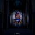
Article written by JurgenatorFreelance theorist